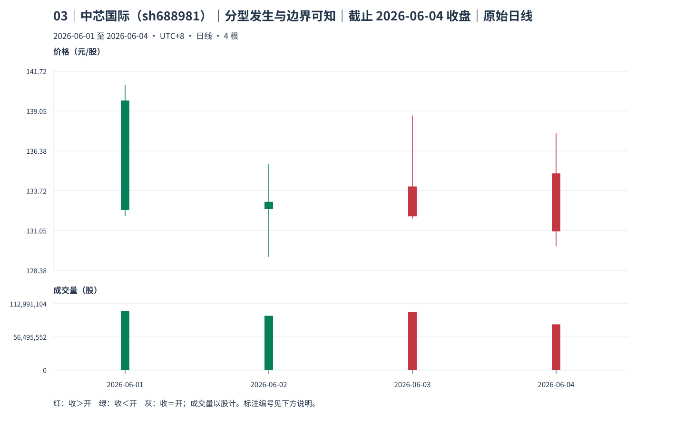

03｜中芯国际（sh688981）｜分型发生与边界可知
截止 2026-06-04 收盘（Asia/Shanghai），本包 4 根原始 K 线。先保存自己的回答，再只看本包讲解。
真实未复权日线；价格单位元/股（CNY/share），成交量单位股（shares），横轴按实际交易日顺序。窗口避开已知价格基准变化，其他公司行为及现金分红日历仍未穷尽核准；价格差不单独证明技术破位、经济损失或投资总回报。样本按教学需要事后选取，不用于估计模式频率。
声明起点 2026-06-01，首对 raw 0=[132.040,140.800]、raw 1（2026-06-02）=[129.300,135.500]，互不包含，高低共同向下。只按本窗口启动，未补造更早热身资料，也未绑定此前已确认段；左边界限制仍保留，首个笔端点不能自动作为真实段起点。

本次只答这些问题
- 分别比较相邻三组的高和低，判定顶底。
- 把极值发生日、三组形成日、known_at 分开；最后右组是否仍可能吸收？
另存原答：案例号、截止、raw/P 号、实际区间、候选或确认、何时知道、仍缺什么。文件隔离维护教学顺序，不是访问控制。